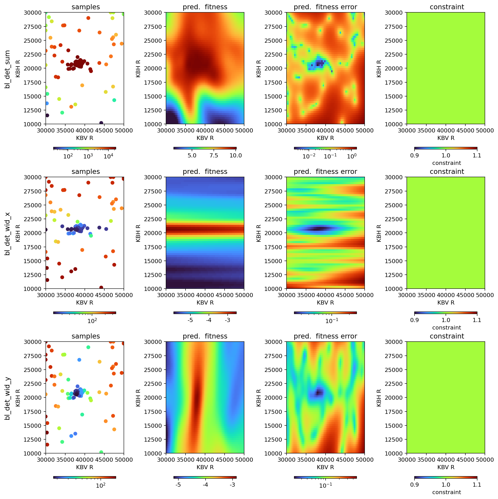

XRT Blop Demo¶
For ophyd beamline setup see:
https://github.com/NSLS-II/blop/blob/main/src/blop/sim/xrt_beamline.py
https://github.com/NSLS-II/blop/blob/main/src/blop/sim/xrt_kb_model.py
The picture below displays beam from geometric source propagating through a pair of toroidal mirrors focusing the beam on screen. Simulation of a KB setup.

[1]:
from blop.utils import prepare_re_env # noqa
%run -i $prepare_re_env.__file__ --db-type=temp
bec.disable_plots()
[2]:
import time
from matplotlib import pyplot as plt
from blop import DOF, Agent, Objective
from blop.digestion import beam_stats_digestion
from blop.sim.xrt_beamline import Beamline
[3]:
plt.ion()
h_opt = 0
dh = 5
R1, dR1 = 40000, 10000
R2, dR2 = 20000, 10000
[4]:
beamline = Beamline(name="bl")
time.sleep(1)
dofs = [
DOF(description="KBV R", device=beamline.kbv_dsv, search_domain=(R1 - dR1, R1 + dR1)),
DOF(description="KBH R", device=beamline.kbh_dsh, search_domain=(R2 - dR2, R2 + dR2)),
]
[5]:
objectives = [
Objective(name="bl_det_sum", target="max", transform="log", trust_domain=(20, 1e12)),
Objective(
name="bl_det_wid_x",
target="min",
transform="log",
# trust_domain=(0, 1e12),
latent_groups=[("bl_kbh_dsh", "bl_kbv_dsv")],
),
Objective(
name="bl_det_wid_y",
target="min",
transform="log",
# trust_domain=(0, 1e12),
latent_groups=[("bl_kbh_dsh", "bl_kbv_dsv")],
),
]
[6]:
agent = Agent(
dofs=dofs,
objectives=objectives,
detectors=[beamline.det],
digestion=beam_stats_digestion,
digestion_kwargs={"image_key": "bl_det_image"},
verbose=True,
db=db,
tolerate_acquisition_errors=False,
enforce_all_objectives_valid=True,
train_every=3,
)
[7]:
RE(agent.learn("qr", n=16))
RE(agent.learn("qei", n=16, iterations=4))
2025-06-19 02:05:06.305 INFO: Executing plan <generator object Agent.learn at 0x7eff1d083ae0>
2025-06-19 02:05:06.309 INFO: Change state on <bluesky.run_engine.RunEngine object at 0x7eff1e5da980> from 'idle' -> 'running'
2025-06-19 02:05:06.311 INFO: running iteration 1 / 1
Transient Scan ID: 1 Time: 2025-06-19 02:05:06
Persistent Unique Scan ID: '0d631cca-6756-4b08-98d7-3cb80b6b184a'
ToroidMirror2 center: [0, 11000, np.float64(176.32831189648832)]
New stream: 'primary'
+-----------+------------+------------+------------+------------+--------------+--------------+--------------+--------------+
| seq_num | time | bl_kbv_dsv | bl_kbh_dsh | bl_det_sum | bl_det_cen_x | bl_det_cen_y | bl_det_wid_x | bl_det_wid_y |
+-----------+------------+------------+------------+------------+--------------+--------------+--------------+--------------+
| 1 | 02:05:06.7 | 31089.002 | 13966.109 | 145.021 | 226.638 | 141.817 | 337.825 | 102.733 |
| 2 | 02:05:06.8 | 34242.315 | 16246.039 | 4719.726 | 215.917 | 151.739 | 246.067 | 66.638 |
| 3 | 02:05:07.0 | 36147.575 | 17899.019 | 4444.829 | 218.083 | 148.995 | 131.467 | 50.575 |
| 4 | 02:05:07.1 | 38474.702 | 20357.231 | 23653.259 | 195.535 | 146.644 | 15.031 | 20.133 |
| 5 | 02:05:07.3 | 31602.994 | 23631.008 | 6562.558 | 203.497 | 155.550 | 100.466 | 116.792 |
| 6 | 02:05:07.4 | 33689.563 | 26507.939 | 5222.120 | 206.000 | 152.161 | 174.867 | 70.647 |
| 7 | 02:05:07.6 | 36856.883 | 29503.691 | 2529.762 | 211.069 | 152.231 | 357.588 | 42.315 |
| 8 | 02:05:07.7 | 40435.996 | 26078.777 | 4638.091 | 206.554 | 152.568 | 196.008 | 52.568 |
| 9 | 02:05:07.8 | 44856.542 | 23826.238 | 8970.462 | 201.308 | 154.810 | 116.366 | 90.161 |
| 10 | 02:05:08.0 | 49797.969 | 28058.611 | 840.513 | 192.771 | 152.312 | 230.292 | 91.125 |
| 11 | 02:05:08.1 | 45533.673 | 22036.538 | 4425.658 | 201.253 | 152.402 | 72.330 | 90.278 |
| 12 | 02:05:08.2 | 47821.419 | 19655.847 | 2177.814 | 195.156 | 154.021 | 56.812 | 107.458 |
| 13 | 02:05:08.4 | 42255.991 | 16362.538 | 5693.061 | 206.000 | 149.166 | 228.467 | 56.860 |
| 14 | 02:05:08.5 | 43075.308 | 13459.439 | 630.661 | 227.963 | 152.625 | 309.825 | 63.625 |
| 15 | 02:05:08.6 | 39144.639 | 11888.620 | 3605.714 | 200.135 | 151.456 | 358.096 | 19.847 |
| 16 | 02:05:08.8 | 47470.852 | 10522.279 | 10.553 | 207.438 | 134.938 | 284.375 | 77.375 |
+-----------+------------+------------+------------+------------+--------------+--------------+--------------+--------------+
generator list_scan ['0d631cca'] (scan num: 1)
2025-06-19 02:05:10.824 INFO: Change state on <bluesky.run_engine.RunEngine object at 0x7eff1e5da980> from 'running' -> 'idle'
2025-06-19 02:05:10.825 INFO: Cleaned up from plan <generator object Agent.learn at 0x7eff1d083ae0>
2025-06-19 02:05:10.827 INFO: Executing plan <generator object Agent.learn at 0x7eff1d083f40>
2025-06-19 02:05:10.829 INFO: Change state on <bluesky.run_engine.RunEngine object at 0x7eff1e5da980> from 'idle' -> 'running'
2025-06-19 02:05:10.830 INFO: running iteration 1 / 4
Transient Scan ID: 2 Time: 2025-06-19 02:05:18
Persistent Unique Scan ID: '05b054c5-38eb-4d71-ba43-c244b7fa76aa'
New stream: 'primary'
+-----------+------------+------------+------------+------------+--------------+--------------+--------------+--------------+
| seq_num | time | bl_kbv_dsv | bl_kbh_dsh | bl_det_sum | bl_det_cen_x | bl_det_cen_y | bl_det_wid_x | bl_det_wid_y |
+-----------+------------+------------+------------+------------+--------------+--------------+--------------+--------------+
| 1 | 02:05:18.6 | 42429.867 | 19708.156 | 11654.699 | 203.449 | 144.730 | 40.437 | 59.951 |
| 2 | 02:05:18.7 | 43919.836 | 21753.301 | 8637.988 | 201.593 | 157.504 | 46.172 | 70.439 |
| 3 | 02:05:18.9 | 39868.465 | 24005.008 | 9022.554 | 219.574 | 152.929 | 132.697 | 42.442 |
| 4 | 02:05:19.0 | 39837.312 | 21892.996 | 21712.897 | 205.557 | 157.170 | 43.839 | 32.712 |
| 5 | 02:05:19.1 | 38549.066 | 21820.180 | 23149.385 | 203.848 | 154.350 | 44.841 | 23.629 |
| 6 | 02:05:19.2 | 38454.508 | 21313.816 | 23448.816 | 198.660 | 154.016 | 20.419 | 18.749 |
| 7 | 02:05:19.4 | 38370.699 | 20825.242 | 23698.609 | 193.970 | 149.897 | 14.270 | 18.494 |
| 8 | 02:05:19.5 | 37412.750 | 20772.264 | 23653.340 | 193.257 | 150.421 | 13.732 | 20.312 |
| 9 | 02:05:19.6 | 38405.945 | 20168.102 | 23596.920 | 198.413 | 145.545 | 17.283 | 19.927 |
| 10 | 02:05:19.7 | 38690.227 | 20587.656 | 23479.127 | 193.790 | 148.595 | 14.151 | 20.618 |
| 11 | 02:05:19.9 | 38624.566 | 20914.021 | 23584.498 | 194.254 | 151.142 | 15.692 | 21.135 |
| 12 | 02:05:20.0 | 39248.941 | 20461.297 | 23243.814 | 194.165 | 147.994 | 14.386 | 29.421 |
| 13 | 02:05:20.1 | 39515.621 | 18733.367 | 17154.195 | 211.780 | 148.929 | 87.373 | 33.124 |
| 14 | 02:05:20.2 | 37783.906 | 17929.766 | 11844.325 | 220.417 | 146.146 | 140.433 | 18.744 |
| 15 | 02:05:20.4 | 36457.328 | 18322.871 | 7958.692 | 211.212 | 149.814 | 116.358 | 40.789 |
| 16 | 02:05:20.5 | 35736.676 | 17140.906 | 2088.579 | 206.060 | 150.522 | 192.270 | 58.967 |
+-----------+------------+------------+------------+------------+--------------+--------------+--------------+--------------+
generator list_scan ['05b054c5'] (scan num: 2)
2025-06-19 02:05:22.089 INFO: running iteration 2 / 4
Transient Scan ID: 3 Time: 2025-06-19 02:05:29
Persistent Unique Scan ID: 'f74cb22f-db34-4f47-b300-e3f7b51dd7dc'
New stream: 'primary'
+-----------+------------+------------+------------+------------+--------------+--------------+--------------+--------------+
| seq_num | time | bl_kbv_dsv | bl_kbh_dsh | bl_det_sum | bl_det_cen_x | bl_det_cen_y | bl_det_wid_x | bl_det_wid_y |
+-----------+------------+------------+------------+------------+--------------+--------------+--------------+--------------+
| 1 | 02:05:29.4 | 36607.273 | 17638.684 | 4177.972 | 207.554 | 149.523 | 152.258 | 43.129 |
| 2 | 02:05:29.5 | 36015.113 | 15936.021 | 2648.603 | 204.911 | 150.249 | 263.523 | 48.452 |
| 3 | 02:05:29.7 | 35754.555 | 15660.629 | 7381.867 | 205.800 | 150.222 | 257.100 | 40.425 |
| 4 | 02:05:29.8 | 34389.266 | 14253.060 | 1467.217 | 207.217 | 151.438 | 315.133 | 55.575 |
| 5 | 02:05:29.9 | 33675.258 | 18430.242 | 11891.424 | 207.092 | 150.564 | 103.617 | 72.679 |
| 6 | 02:05:30.0 | 32265.359 | 18895.205 | 11810.362 | 205.034 | 151.748 | 84.823 | 111.675 |
| 7 | 02:05:30.1 | 33762.219 | 20702.957 | 7462.835 | 192.599 | 154.300 | 12.692 | 66.000 |
| 8 | 02:05:30.2 | 33808.656 | 20648.535 | 8467.214 | 192.139 | 152.227 | 12.481 | 65.896 |
| 9 | 02:05:30.3 | 34311.809 | 20742.516 | 10113.792 | 192.568 | 152.577 | 13.864 | 67.755 |
| 10 | 02:05:30.4 | 35863.305 | 19536.305 | 20932.296 | 206.213 | 145.398 | 44.826 | 43.935 |
| 11 | 02:05:30.5 | 36067.301 | 20698.762 | 23167.030 | 192.234 | 151.715 | 14.262 | 41.970 |
| 12 | 02:05:30.6 | 36711.730 | 21234.672 | 22992.702 | 198.527 | 156.704 | 16.927 | 29.553 |
| 13 | 02:05:30.7 | 37071.238 | 20702.730 | 23416.745 | 192.789 | 151.258 | 13.758 | 23.354 |
| 14 | 02:05:30.8 | 37955.680 | 20472.391 | 23787.697 | 194.051 | 147.453 | 14.352 | 17.206 |
| 15 | 02:05:30.9 | 37974.488 | 20602.793 | 23715.769 | 193.741 | 148.318 | 13.246 | 17.364 |
| 16 | 02:05:31.0 | 38123.383 | 20609.736 | 23812.745 | 193.848 | 148.417 | 14.345 | 18.475 |
+-----------+------------+------------+------------+------------+--------------+--------------+--------------+--------------+
generator list_scan ['f74cb22f'] (scan num: 3)
2025-06-19 02:05:32.279 INFO: running iteration 3 / 4
/opt/hostedtoolcache/Python/3.10.17/x64/lib/python3.10/site-packages/botorch/optim/optimize.py:331: BadInitialCandidatesWarning: Unable to find non-zero acquisition function values - initial conditions are being selected randomly.
generated_initial_conditions = opt_inputs.get_ic_generator()(
Transient Scan ID: 4 Time: 2025-06-19 02:05:42
Persistent Unique Scan ID: 'd130b4a1-86a5-4bd7-b08d-e0e52d1d7464'
New stream: 'primary'
+-----------+------------+------------+------------+------------+--------------+--------------+--------------+--------------+
| seq_num | time | bl_kbv_dsv | bl_kbh_dsh | bl_det_sum | bl_det_cen_x | bl_det_cen_y | bl_det_wid_x | bl_det_wid_y |
+-----------+------------+------------+------------+------------+--------------+--------------+--------------+--------------+
| 1 | 02:05:42.3 | 39906.328 | 22725.410 | 20030.424 | 202.789 | 153.383 | 81.506 | 35.786 |
| 2 | 02:05:42.4 | 39122.273 | 22519.664 | 21675.308 | 206.683 | 154.404 | 78.875 | 26.765 |
| 3 | 02:05:42.5 | 37800.305 | 22471.980 | 22936.169 | 203.970 | 151.993 | 80.483 | 21.249 |
| 4 | 02:05:42.6 | 38083.211 | 21924.324 | 23350.859 | 201.474 | 152.976 | 56.791 | 23.678 |
| 5 | 02:05:42.7 | 37933.867 | 20594.500 | 23849.666 | 193.549 | 148.425 | 14.364 | 17.850 |
| 6 | 02:05:42.8 | 37297.691 | 17719.957 | 7950.673 | 210.001 | 149.582 | 134.673 | 15.412 |
| 7 | 02:05:42.9 | 37847.699 | 12227.791 | 768.419 | 196.872 | 148.763 | 357.177 | 21.344 |
| 8 | 02:05:43.0 | 38081.797 | 10790.975 | -216.956 | 202.871 | 149.154 | 362.192 | 20.054 |
| 9 | 02:05:43.1 | 38772.094 | 10320.061 | 2385.152 | 200.177 | 150.285 | 363.874 | 14.630 |
| 10 | 02:05:43.2 | 39215.922 | 10000.000 | 1213.778 | 207.102 | 153.105 | 350.021 | 18.141 |
| 11 | 02:05:43.3 | 39197.164 | 10000.000 | 1340.459 | 210.214 | 151.839 | 360.415 | 18.243 |
| 12 | 02:05:43.4 | 39195.762 | 10000.000 | 1409.686 | 199.818 | 151.067 | 386.402 | 20.172 |
| 13 | 02:05:43.5 | 39192.730 | 10000.000 | 1293.546 | 201.240 | 151.842 | 365.780 | 20.401 |
| 14 | 02:05:43.6 | 38774.688 | 10000.000 | 2094.650 | 193.192 | 150.753 | 361.517 | 14.675 |
| 15 | 02:05:43.7 | 31153.676 | 10431.089 | 13.394 | 256.000 | 153.250 | 285.333 | 109.500 |
| 16 | 02:05:43.7 | 30353.320 | 10459.763 | 15.498 | 70.900 | 164.100 | 141.800 | 85.400 |
+-----------+------------+------------+------------+------------+--------------+--------------+--------------+--------------+
generator list_scan ['d130b4a1'] (scan num: 4)
2025-06-19 02:05:45.189 INFO: running iteration 4 / 4
Transient Scan ID: 5 Time: 2025-06-19 02:05:53
Persistent Unique Scan ID: 'a6a415ba-3ce7-4a75-af1f-af04ec8c0c9e'
New stream: 'primary'
+-----------+------------+------------+------------+------------+--------------+--------------+--------------+--------------+
| seq_num | time | bl_kbv_dsv | bl_kbh_dsh | bl_det_sum | bl_det_cen_x | bl_det_cen_y | bl_det_wid_x | bl_det_wid_y |
+-----------+------------+------------+------------+------------+--------------+--------------+--------------+--------------+
| 1 | 02:05:53.8 | 31748.496 | 18669.742 | 8667.234 | 206.313 | 150.500 | 93.095 | 108.762 |
| 2 | 02:05:53.9 | 35690.477 | 20174.215 | 21906.770 | 197.397 | 148.076 | 14.390 | 42.903 |
| 3 | 02:05:54.1 | 35911.812 | 18520.094 | 17151.737 | 209.537 | 149.327 | 101.414 | 40.464 |
| 4 | 02:05:54.2 | 37047.438 | 19487.686 | 22515.760 | 208.504 | 146.329 | 44.434 | 25.679 |
| 5 | 02:05:54.4 | 37578.004 | 19833.781 | 23319.369 | 201.791 | 144.890 | 28.882 | 20.289 |
| 6 | 02:05:54.5 | 36927.312 | 20334.725 | 23225.310 | 194.810 | 147.818 | 15.899 | 27.445 |
| 7 | 02:05:54.6 | 37038.691 | 20220.541 | 23414.210 | 195.953 | 146.850 | 15.898 | 25.437 |
| 8 | 02:05:54.7 | 37248.703 | 20376.133 | 23528.000 | 194.208 | 148.147 | 14.777 | 21.764 |
| 9 | 02:05:54.9 | 37529.781 | 20580.816 | 23945.283 | 193.348 | 149.072 | 13.341 | 18.907 |
| 10 | 02:05:55.0 | 37817.531 | 20581.691 | 23788.866 | 193.913 | 148.450 | 13.644 | 17.610 |
| 11 | 02:05:55.2 | 37608.277 | 20375.324 | 23774.496 | 194.569 | 147.337 | 15.571 | 19.593 |
| 12 | 02:05:55.3 | 37673.887 | 20219.748 | 23650.724 | 196.442 | 146.031 | 17.274 | 18.853 |
| 13 | 02:05:55.4 | 38007.184 | 19244.770 | 23041.494 | 206.216 | 145.863 | 68.532 | 19.168 |
| 14 | 02:05:55.6 | 38349.453 | 19187.434 | 22605.946 | 205.786 | 146.050 | 74.821 | 21.150 |
| 15 | 02:05:55.7 | 39187.980 | 20115.051 | 22925.868 | 199.757 | 145.798 | 17.266 | 29.696 |
| 16 | 02:05:55.7 | 39501.289 | 19629.375 | 22093.937 | 206.410 | 146.772 | 37.945 | 33.335 |
+-----------+------------+------------+------------+------------+--------------+--------------+--------------+--------------+
generator list_scan ['a6a415ba'] (scan num: 5)
2025-06-19 02:05:57.353 INFO: Change state on <bluesky.run_engine.RunEngine object at 0x7eff1e5da980> from 'running' -> 'idle'
2025-06-19 02:05:57.355 INFO: Cleaned up from plan <generator object Agent.learn at 0x7eff1d083f40>
[7]:
('05b054c5-38eb-4d71-ba43-c244b7fa76aa',
'f74cb22f-db34-4f47-b300-e3f7b51dd7dc',
'd130b4a1-86a5-4bd7-b08d-e0e52d1d7464',
'a6a415ba-3ce7-4a75-af1f-af04ec8c0c9e')
[8]:
agent.plot_objectives(axes=(0, 1))
